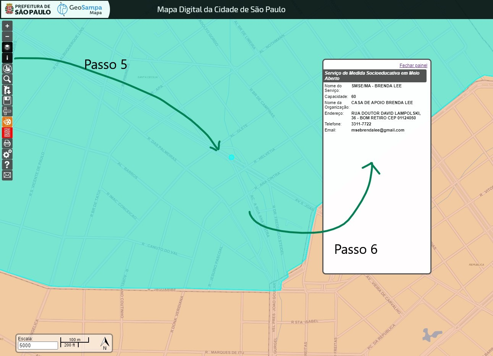

INSTRUÇÕES PARA LOCALIZAÇÃO DE SMSE/MA
POR ENDEREÇOS DOS ADOLESCENTES
No menu à direita na tela, selecione no Mapa Base a alternativa Político Administrativo e as seguintes Camadas: Equipamentos, Assistência Social e Serviços de Medida Socioeducativo em Meio Aberto.
Em seguida, no menu à esquerda na tela, clique no ícone "Lupa" para Pesquisar pelo endereço do adolescente. Preencha o endereço do adolescente de acordo com as instruções de preenchimento para cada um dos campos: Tipo , Título (se houver) logradouro e número. Não use nenhum dos acentos e nem cedilha (ç).
Na parte inferior do quadro de busca aparecerá uma ou mais opções para o endereço digitado. Verifique e marque a opção correta clicando sobre ela.
No mapa aparecerá um ponto que corresponde à localização exata do endereço digitado. Confira se o endereço está correto no mapa e, no menu à esquerda, agora clique no ícone i para Obter Informações da Camada e, em seguida, posicione o cursor sobre o ponto de localização do endereço (que apareceu no mapa) e clique novamente sobre ele.
No canto superior direito da tela aparecerá o nome e os contatos do Serviço de Medidas Socioeducativo em Meio Aberto responsável pelo atendimento naquela região que abrange o endereço pesquisado.
